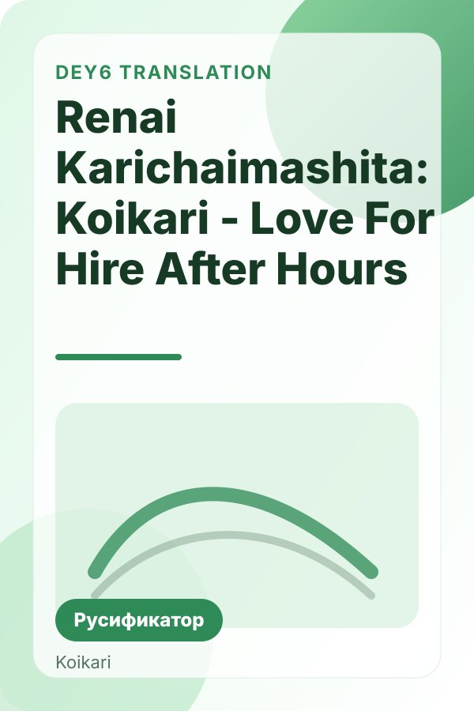
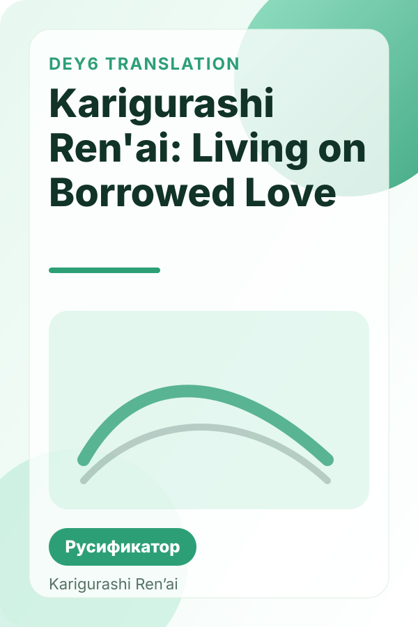
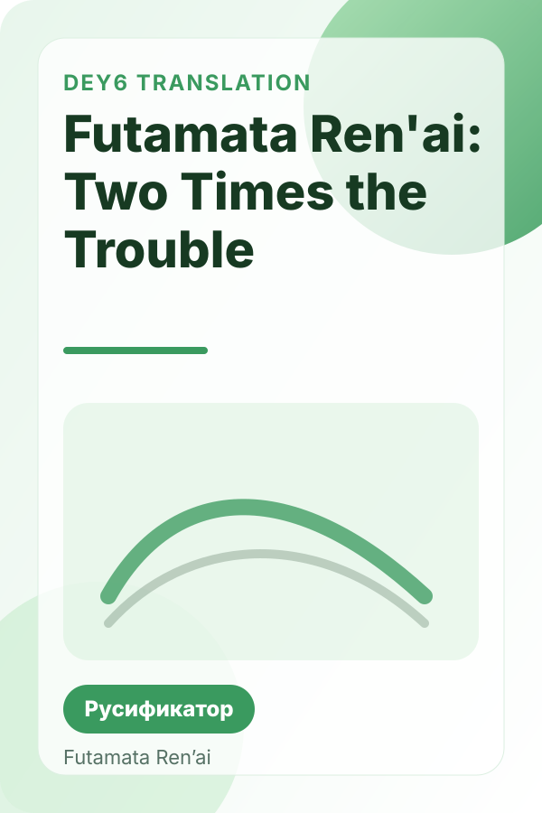
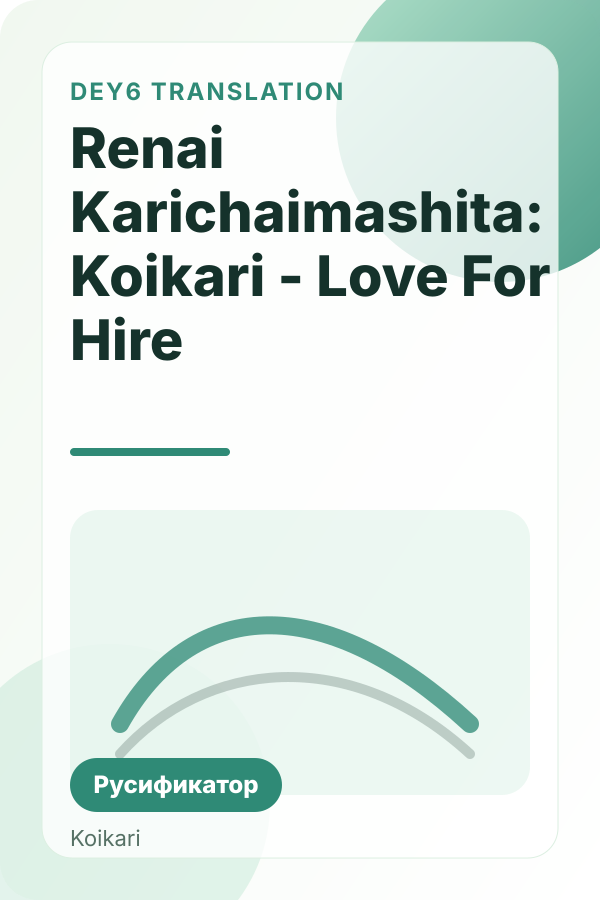

14.09.2026 · ≈ 25–30 000
Hold Me Tight All Night, Onii-chan!
Русификатор Hold Me Tight All Night, Onii-chan! на русский язык. Переведено около 25–30 тысяч строк.
Сайт Dey6 с отдельной страницей под каждую игру: большие карточки, вертикальные обложки, быстрые ссылки на скачивание, инструкции и SEO-страницы под запросы вроде «перевод визуальных новелл» и «русификаторы visual novel».

Отдельная страница русификатора, ключевые запросы, описание перевода и установка.
Открыть страницуНе только карточки игр: мы добавили отдельные посадочные страницы под широкие запросы, чтобы сайт мог появляться и по тематике переводов визуальных новелл в целом.
SEO-страница под общий запрос о переводах Visual Novel на русский язык.
Подборка для людей, которые ищут именно русификаторы визуальных новелл.
Пошаговый гайд по установке перевода в игру или визуальную новеллу.
Куда кидать файлы, что делать при ошибке и где смотреть обновления.
Ищи по названию игры, студии или слову «русификатор». Каждая карточка ведёт на отдельную индексируемую страницу с обложкой, описанием и установкой.
Русификатор Hold Me Tight All Night, Onii-chan! на русский язык. Переведено около 25–30 тысяч строк.


Русификатор Hello, Goodbye на русский язык. Переведено около 30 тысяч строк и почти полностью локализовано меню.

Русификатор Primal Hearts на русский язык. Переведено примерно 40–45 тысяч строк.

Русификатор Riddle Joker от Dey6. Переведено около 55 тысяч строк; на странице есть загрузка и инструкция.
Русификатор Hello Lady! Complete Edition на русский язык, включая DLC. Переведено около 40 тысяч строк.

Русификатор продолжения Koikari — After Hours. Русский перевод от Dey6, около 10 тысяч строк.

Русификатор Karigurashi Ren'ai: Living on Borrowed Love от Dey6. Переведено около 30 тысяч строк.

Русификатор Futamata Ren'ai: Two Times the Trouble на русский язык. Переведено около 29 тысяч строк.

Русский перевод My Girlfriend Is President. Страница загрузки русификатора, инструкция по установке и оригинальный пост автора.

Русский перевод Renai Karichaimashita: Koikari - Love For Hire от Dey6. В русификатор встроен 18+ патч; перевод продолжает редактироваться.
На главной и на отдельных SEO-страницах теперь явно используются запросы «переводы визуальных новелл», «русификаторы visual novel» и «русские переводы VN». Это даёт Google больше шансов понять тематику сайта целиком, а не только названия конкретных игр.